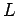
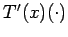
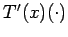

Seien  BANACH-Räume,
BANACH-Räume,  eine offene Menge und . Der Operator T heißt FR´ECHET-differenzierbar im Punkt , wenn ein (im allgemeinen von der Stelle x abhängiger, linearer stetiger) Operator existiert, so daß
eine offene Menge und . Der Operator T heißt FR´ECHET-differenzierbar im Punkt , wenn ein (im allgemeinen von der Stelle x abhängiger, linearer stetiger) Operator existiert, so daß
oder in äquivalenter Schreibweise
gilt, d.h. , so daß die Ungleichung impliziert. Der Operator , den man gewöhnlich mit  oder  bezeichnet, heißt FR´ECHET-Ableitung des Operators T im Punkt
oder  bezeichnet, heißt FR´ECHET-Ableitung des Operators T im Punkt  . Den Wert dT(x;h)=T'(x)h nennt man FR´ECHET-Differential des Operators T im Punkt x (für den Zuwachs h). Die Bezeichnungen ,,weisen den Platz für das Argument aus``, auf das die Ableitung des Operators angewendet werden kann. Aus der Differenzierbarkeit eines Operators in einem Punkt folgt seine Stetigkeit in diesem Punkt. Ist , also selbst bereits linear und stetig, dann ist T in jedem Punkt x differenzierbar, und die Ableitung ist gleich
. Den Wert dT(x;h)=T'(x)h nennt man FR´ECHET-Differential des Operators T im Punkt x (für den Zuwachs h). Die Bezeichnungen ,,weisen den Platz für das Argument aus``, auf das die Ableitung des Operators angewendet werden kann. Aus der Differenzierbarkeit eines Operators in einem Punkt folgt seine Stetigkeit in diesem Punkt. Ist , also selbst bereits linear und stetig, dann ist T in jedem Punkt x differenzierbar, und die Ableitung ist gleich  .
.